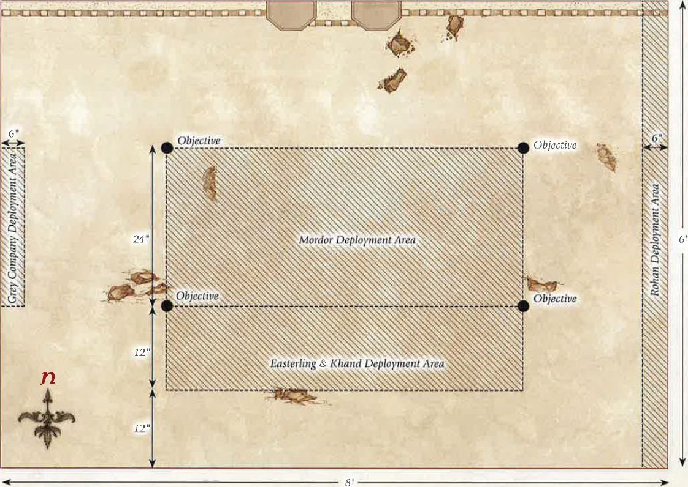

Armies of Lord of the Rings
THE LAST ALLIANCE
As the Second Age draws to a close, darkness has descended upon Middle-earth. The Dark Lord Sauron has conquered much of the free lands as his shadow has extended forth from the realm of Mordor. Yet there are some who have stood defiant against this seemingly unstoppable threat, forming an alliance to face and defeat the Dark Lord once and for all.
A Last Alliance of Men and Elves has rallied against the armies of Sauron, marching upon Mordor and towards the greatest battle of the Age. Gil-galad, High King of the Elves, has led his kin and accompanied Elendil, the High King of the Nilmendreans, in a bid to overthrow the Dark Lord and end his reign of terror.
It is upon the slopes of Mount Doom that the fate of Middle-earth will be decided, as Men and Elves fight side-by-side against the onslaught of Orcs and other foul creatures in the name of freedom. Should the Dark Lord be slain, Middle-earth will be freed from his clutches and the turmoil he has wrought. Yet should Sauron stand victorious, the free lands of Middle-earth shall fade into distant memory as darkness descends upon them.
LAYOUT
This Scenario is played on a 6'x4' board. A board this size allows you to truly get a feel for the massive scale of the battle that is raging upon the slopes of Mount Doom. As this battle takes place in the ash-filled land of Mordor, the scenery should reflect that. There should be plenty of rocks and broken up areas of ground and you may even wish to include lava flows (counting as chasms) to add an extra level of detail to your board.
STARTING POSITIONS
The Evil player places all of their models, except for Sauron, within 12" of the northern board edge. The Good player then places all of their models within 12" of the southern board edge.
OBJECTIVES
This is the final battle of the Age; only by ensuring the destruction of the enemy's leaders can one force hope to claim victory. The Good player wins immediately if at any point the Ring is separated from the Dark Lord's finger and he is slain. The Evil player wins if at the end of any turn all four of the Good Heroes are slain.
SPECIAL RULES
The Power of the Ring could not be undone - With his weapon of ultimate power the Dark Lord is all but unstoppable, capable ofcrushing his foes and unleashing a barrage of dark sorceries upon those who oppose him.
Sauron enters play from any point on the northern board edge at the end of the Evil player's fourth Move phase. Additionally, Sauron may cast two Magical Powers rather than one on the turn in which he arrives on the board.
The Black Legion of Barad-dur - The numbers that spill forth from the depths of Mordor are beyond count, far outnumbering the forces of Men and Elves that have come to overthrow the Dark Lord. As the battle rages on, more and more Orcs issue forth from the black land.
Each time an Orc Warrior is slain, place it to one side. At the end of each Evil Move phase, roll a dice for each Orc Warrior not currently on the board. On a 5+, that model may re-enter the battlefield from the northern board edge or either of the spots marked X (see map).
The Last Stand of Men and Elves - Both Gil-galad and Elendil are highly aware that failure is not an option, they must either put a stop to Sauron's tyranny for good or they will die in the attempt.
Good Hero models do not need to take Courage tests to Charge Sauron.
The Fall of Kings - Should the High Kings of Men and Elves fall, their successors shall fight even harder to avenge them.
If Gil-galad is slain, from that point onwards Elrond may call a Heroic Strike each turn without expending Might.
If Elendil is slain, from that point onwards Isildur may call a Heroic Strike each turn without expending Might.
PARTICIPANTS
GOOD
Elendil, High King of Gondor and Amor; Isildur; Gil-galad, High King of the Elves; Elrond, Master of Rivendell; 36 Warriors of Numenor: 12 with shield, 12 with spear & shield and 12 with bow; 37 High Elf Warriors: 12 with spear and shield, 12 with Elf bow, 12 with no additional equipment, 1 with banner.
EVIL
The Dark Lord Sauron; 4 Orc Captains with shield; 2 Mordor Trolls; 72 Mordor Orcs: 24 with shield, 24 with spear, 12 with two-handed weapon, 12 with Orc bow.

THE FALL OF KHAZAD-DUM
The great wealth of the Dwarven kingdom of Khazad-dum came not from gold, but from the precious Mithril that was mined in the great depths of The Misty Mountains. Ever deeper, the Dwarves delved in search of this most precious of metals, and as they did, their kingdom prospered.
Yet such wealth and prosperity could not endure indefinitely, and the kingdom of Khazad-dum was doomed to fall into ruin. It was under the peak of Barazinbar where the doom of the Dwarves was uncovered, for amidst their constant mining and digging, the Dwarves of Khazad-dum uncovered a terrible foe; one which had long slept beneath the bowels of the mountains since the final years of the First Age.
Prom the depths of the world a Balrog of Morgoth came forth, wreathed in shadow and flame. This terrible foe wrought destruction and death upon the Dwarves of Khazad-dum, and the foul Goblins that dwelt within the caves and recesses of The Misty Mountains plundered the Dwarves' mighty halls in its wake.
Although he must have known it was to be his end, the mighty Dwarf king Durin stood defiant against this demon, rallying his followers to his side to fight to the death in defence of their mountain home. It was in the great halls beneath Barazinbar where this final battle for the kingdom of Khazad-dum would take place, and where the Balrog would gain the moniker of Durin's Bane - a name that would never be forgotten.
LAYOUT
This Scenario is played on a 4'x4' board. A 6" wide chasm spans the length of the board across the centre from east to west, with a series of bridges providing the way across. The rest of the board is littered with rocks, pillars and Dwarven scaffolding.
STARTING POSITIONS
The Good player deploys all of their models anywhere on the southern side of the chasm. The Evil player then deploys all of their models anywhere on the northern side of the chasm.
OBJECTIVES
The Balrog's wrath knows no bounds, and it has come to smite all those that stand in its path, bringing with it a tide of Goblins intent on pillaging the great wealth of the Dwarven halls. For the Dwarves to claim victory in these dark times the Balrog must be slain, for only then can the Goblins be driven from Khazad-dum.
The Good player wins if at the end of any turn the Balrog in slain. The Evil player wins if they can wipe out the entire Good force before this can happen.
SPECIAL RULES
From the depths - The evil of the Balrog draws even more Goblins forth from the Black Pit of Moria.
At the end of each Evil Move phase, roll a D6 for each Goblin Warrior that has previously been slain. On a 5+, place the model anywhere in base contact with the edge of the central chasm.
Durin's Last Stand - Refusing to flee from this foe, Durin thrusts himself into the unending tide of foes in his attempt to defend his kingdom - inspiring his captains to do the same.
All Dwarf Hero models may re-roll any failed To Wound rolls.
PARTICIPANTS
GOOD
Durin, King of Khazad-dum; Mardin; Dwarf Captain with shield; 12 Khazad Guard with the Hearthguard upgrade; 12 Iron Guard; 6 Vault Warden teams; 24 Dwarf Warriors; Dwarf Ballista.
EVIL
The Balrog; Moria Goblin Captain with shield; Moria Goblin Shaman; Moria Blackshield Captain; 12 Moria Blackshields; 12 Moria Goblin Prowlers; 36 Moria Goblins: 12 with shield, 12 with spear, 12 with Orc bow; Moria Goblin Drum; 3 Cave Trolls.
THE FALL OF ARNOR
Formed by the High King Elendil, the Kingdom of Arnor was the most powerful realm in the north of Middle-earth. It was said that the combined might of her armies could not be defeated, not even by all the Orcs, Trolls and Evil Men in Middle-earth. Yet the dominance of Arnor was not meant to last.
As the years of the Third Age passed by, Arnor suffered harshly from plague and famine. Her once great cities fell into ruin before being abandoned to the servants of Evil. Mighty cities of stone were now reduced to nought but rubble, overrun with Orcs and other foul beings; and with each city that suffered this fate, the realm of Arnor became smaller and weaker.
At the time of King Arvedui, Arnor had been reduced to only its capital of Fornost, a shadow of the glory that this realm once possessed. The great armies of earlier times were no more and the realm was divided and battered by war with the ever-growing forces ofAngmar. Gone were the times where Amor's armies could not be matched, for destiny was about to prove otherwise.
With Arnor weak, the Witch-king ofAngmar had perceived that it was time for his forces to assail the last remaining bastion of Amor's former might, finally reducing this once majestic realm to nothing. Sending forth an army of Orcs, Trolls and foul spirits, the Witch-king's forces were sent with but one objective - to slay the King of Arnor and destroy the Dunedain.
LAYOUT
This Scenario is played on a 4'x4' board. The centre of the board represents the ruined palace of Fornost, whilst the remainder of the board represents the remaining ruins of the city. The board should be covered in ruins and piles of rocks towards the edges, and much more substantial buildings towards the centre.
STARTING POSITIONS
The Good player deploys all of their models anywhere within 6" of the centre of the board. The Evil player then deploys their models anywhere within 6" of any board edge.
OBJECTIVES
The forces of Angmar have been given a single task, to wipe out the royal lineage of Arnor and claim Fornost for the Witch-king. Arvedui must survive this onslaught if his line is to endure, for a much larger army of fouler creatures draws ever nearer.
The Evil player wins immediately if both Arvedui and Malbeth are slain. The Good player wins if the Evil force is wiped out before this can happen. Alternatively, the game is a draw if Arvedui abandons Fornost and manages to escape the board via any board edge - and if the battle is going ill, this may be a good idea!
SPECIAL RULES
Malbeth the Seer - Malbeth knows that the doom of Amor is upon his king and so puts all of his visions to use in protecting his liege.
Whenever Arvedui suffers a Wound within 6 " of Malbeth, he will ignore the Wound on a 4+ rather than a 5+.
Arvedui's Last Stand - Arvedui knows that if he does not stand and fight this threat from the north then his kingdom shall be thrust into destruction and ruin.
Arvedui has the Fearless special rule.
PARTICIPANTS
GOOD
Arvedui, Last King of Arnor; Malbeth the Seer; Captain of Arnor; 24 Warriors of Arnor; 12 Rangers of Arnor.
EVIL
Shade; Angmar Orc Captain with shield; Angmar Orc Shaman; Barrow-wight; 3 Dead Marsh Spectres; 24 Angmar Orcs: 8 with shield, 8 with spear, 4 with Orc bow, 4 with two-handed weapon; 2 Cave Trolls.

AMBUSH AT AMON HEN
Following their departure from the safety of the forest of Lorien, the remaining members of The Fellowship have made their way down the waters of the Anduin before mooring their boats upon the shores of Amon Hen to rest. It is here that the Ring finally latches onto Boromir's desire to possess it and bring it to Minas Tirith, driving the Man of Gondor mad as he attempts to take the Ring from Frodo.
Meanwhile, Saruman has unleashed his fighting Uruk-hai from Isengard. Their mission is simple, to capture and return the Halflings to the White Wizard and to kill anyone who should get in their way. With great haste and the desire to taste man-flesh driving them, the scouts of Isengard soon track The Fellowship and engage them in battle upon the banks of the Anduin.
With Aragorn, Gimli and Legolas fighting the Uruk-hai off, Merry and Pippin are in great danger of being seized and taken to Isengard. Only Boromir stands between the Hobbits and the fearsome Uruk-hai and, desperate to find redemption for the way he treated Frodo, Boromir gives his all in his attempt to deliver Merry and Pippin from harm. It is whilst he is fending off the Uruk-hai scouts that Boromir comes face-to-face with Lurtz, the leader of the Uruk-hai forces; a meeting that would prove a fateful one for the son of Gondor.
With death and loss surrounding him, Frodo has made the decision to go to Mordor alone, in order to prevent further harm befalling his friends. Can Frodo escape in time, or will he fall foul of the scouts of Isengard?
LAYOUT
This Scenario is played on a 4'x4' board. The board should be densely packed with trees and other foliage. The western board edge represents the River Anduin and should have two boats placed at the point marked X. The Seeing Seat should be placed in the eastern half of the board as per the map.
STARTING POSITIONS
Aragorn and Frodo start the game in base contact with the Seeing Seat, whilst Legolas and Gimli can be placed anywhere within 6" of the north-east corner of the board. Merry, Pippin and Boromir are placed between 6"-12" of the boats and no more than 1" away from each other.
The Evil player then places the Uruk-hai Scout Captain and 12 Uruk-hai Scouts within 6" of the Seeing Seat, and Lurtz and the other 12 Uruk-hai Scouts within 12" of Boromir, but no closer than 6".
Finally, Sam is set up anywhere on the board at least 12" away from any other member of the Fellowship.
OBJECTIVES
Frodo has made his decision; he is going to leave The Fellowship and journey to Mordor alone. The Uruk-hai are under strict orders to deliver the Hobbits to Saruman, alive and unspoiled.
The game ends as soon as Frodo leaves the board. If Frodo escapes the board by moving into base contact with the boats, the Good player is the winner. If Frodo is captured by the Uruk-hai, the Evil player is the winner.
The Evil player can claim a draw even if Frodo escapes the board, so long as they have captured any two of the remaining Hobbits.
SPECIAL RULES
Find the Halflings! - Under strict instructions from their master, Saruman, the Uruk-hai will not kill the Hobbits. Instead, they intend to incapacitate them and take them to Isengard to await their fate.
Should a Hobbit suffer their final Wound, instead of being slain they will recover a single Wound and be knocked-out instead - treat them as being subject to the Paralyse Magical Power. Any Evil model may carry a knocked-out Hobbit as if he were a Heavy Object (see page 110 of the Middle-earth Strategy Battle Game Rules Manual). Should any Good model end its Move in base contact with a knocked-out Hobbit, they will automatically revive them and they may act as normal, although they will start their Move in the Prone position. Should any Evil model leave any table edge whilst carrying a knocked-out Hobbit, with the exception of the western edge, then the Evil player is considered to have captured that Hobbit.
The Legions of Isengard - The scouts of Isengard soon flood the area around Amon Hen, providing The Fellowship with a huge task - and increasingly dire odds to overcome.
At the end of each Evil Move phase, roll a D6 for each Evil Warrior that has previously been slain. On a 4+, that model may enter play anywhere along the northern, eastern or southern board edges.
PARTICIPANTS
GOOD
Frodo Baggins with Sting and Mithril Coat; Samwise Gamgee; Meriadoc Brandybuck; Peregrin Took; Aragorn - Strider with bow; Legolas Greenleaf; Gimli, son of Gloin; Boromir of Gondor.
All Good models have an Elven Cloak.
EVIL
Lurtz; Uruk-hai Scout Captain; 24 Uruk-hai Scouts: 8 with no additional equipment, 8 with shield, 8 with Uruk-hai bow.

AMBUSH AT ITHILIEN
As the strength of the Dark Lord continues to rise, all manner of Evil is drawn to Mordor, pledging themselves to the service of Sauron and to fight his war. It is for just this reason that the Haradrim march north from their homes in the far south of Middle-earth, bringing with them the lumbering Mumakil that roam their lands to destroy the Free Peoples of the West.
Yet to reach the Black Gate and enter Mordor, the Haradrim must first travel through the trees and thick undergrowth of Ithilien. It is here that the Haradrim are the victims of a sudden ambush at
the hands of Faramir and the Rangers of Gondor. From the bushes, the Rangers of Gondor fire a hail of arrows upon their foes in an attempt to weaken the forces of the Haradrim, and in turn those of the Dark Lord.
It is the sworn duty of the Rangers to protect their lands from any and all intruders that stray into Ithilien, and it is with that purpose that they set out to halt the relentless march of the Men from the south, for if the Haradrim and their formidable war beasts are prevented from reaching Mordor, then Sauron's forces cannot be bolstered for the battles yet to come.
LAYOUT
This Scenario is played on a 4'x4' board. There should be lots of hedges, trees and bushes dotted around the board - although ideally not heavily impeding the movement across the centre of the board. The terrain should be denser along the northern and southern board edges.
STARTING POSITIONS
The Evil player deploys the two Mumakil touching the western board edge as shown. They may then deploy their remaining models anywhere within 6" of either Mumak. The Good player may then split their force in half - one half containing 12 Rangers and Faramir, and the remaining models in the other half. The Good player then deploys Faramir's half anywhere within 6" of the southern board edge, then their remaining models within 6" of the northern board edge.
OBJECTIVES
The Haradrim journey to Mordor to join with Sauron's armies before the assault on Minas Tirith, the more of them that can make it to the Black Gate, the stronger the Dark Lord will be. Faramir has noted that the lumbering Mumakil pose the greatest threat to Gondor and has tasked his Rangers to see to their downfall.
The game lasts until there are no Mumakil left on the board. The Evil side wins if both Mumakil can move off of the board via the eastern board edge. The Good player wins if they can slay both of the Mumakil. If only one Mumak has managed to escape the board, the game is a draw.
SPECIAL RULES
Unseen Hunters - The Haradrim have no idea that they are being watched by the Rangers of Gondor, let alone that they are walking into an ambush.
At the start of the game, before the first Priority is rolled, each Good model may make a 'free' shooting attack as if it were the Shoot phase. Additionally, for the first three turns of the game, all Good models gain the Stalk Unseen special mle and may re-roll any Is To Wound when making a shooting attack.
PARTICIPANTS
GOOD
Faramir, Captain of Gondor with bow; Madril, Captain of Ithilien; Damrod, Ranger of Ithilien; 24 Rangers of Gondor: 16 with no additional equipment, 8 with spear.
EVIL
2 War Mumakil of Harad each with 12 Haradrim Warriors with bow; 24 Haradrim Warriors with spear.

THE DEEPING WALL IS BREACHED
Isengard has attacked the land of Rohan, burning the Westfold and forcing the Rohirrim to flee to the safety of Helm's Deep. With the people of Theoden taking refuge within the fortress, Saruman sends his army of fighting Uruk-hai to breach its walls and slaughter the people inside. All of Isengard is emptied and an army over ten thousand strong marches to destroy the world of Men.
As the siege of Helm's Deep begins, the forces of Isengard throw their full force at the walls of the fortress to breach it. Battering rams, siege ladders and ballistae are all utilised in the attempt to conquer its walls. Yet it is the White Wizard's secret weapon that finally breaches the Deeping Wall, a feat never before achieved since the fortress' founding. As the collection of crude devices filled with black powder are placed within the culvert of Helm's Deep, a lone Berserker sprints towards it, flaming brand in hand, giving its life to bring about the destruction of the wall.
Fire undoes stone in an explosion of rock and flame, sending great chunks of Helm's Deep soaring into the air and those atop the walls are slain by the devastation. It is through this gaping wound in the Deeping Wall that the Uruk-hai forces pour into Helm's Deep, wading through the water that has begun to collect in the breach created by their bombs. Can Aragorn lead the alliance of Men and Elves against the onslaught of Isengard, or will Helm's Deep fall for the first time in its history?
LAYOUT
This Scenario is played on a 2'x2' board. Along the southern board edge should be the Deeping Wall extending out 3" from the edge. This should have some stairways coming down from it, and should also have a 4" section missing from the centre (where the bomb went off). The area within 6" of the centre of the southern board edge is shallow water.
STARTING POSITIONS
The Good player deploys the Galadhrim Warriors within 2" of the northern board edge and then deploys Haldir, Legolas and the Warriors of Rohan anywhere on the walls in the Prone position. Aragorn is deployed in the centre of the board, also in the Prone position. Gimli is then deployed anywhere within the shallow water.
The Evil player may then deploy up to 10 Uruk-hai Warriors, 2 Berserkers and a single Uruk-hai Captain within the shallow water, at least 1" from Gimli. The rest of the Evil models will be available as the game goes on.
OBJECTIVES
The legions of Isengard are streaming into Helm's Deep, intent on butchering all in their path. It is their sole purpose to cause as much death and destruction as possible. Aragorn must lead the defenders of Helm's Deep in defence of the fortress and fight off Saruman's armies.
The Scenario lasts for 10 turns, after which the side with the most Victory Points is declared the winner.
There are three ways to score Victory Points in this Scenario:
-
The Good player scores 1 Victory Point for each named Hero that is still alive at the end of the game. The Evil player scores 1 Victory Point for each named Hero that has been slain.*
-
The Good player scores 1 Victory Point if at the end of the game more than 14 Good models are left alive. The Evil player scores 1 Victory Point if at the end of the game less than 14 Good models are alive.
-
Evil models that are not within the shallow water are considered to be within the walls of Helm's Deep. The Evil player scores 2 Victory Points if at the end of the game there are more Evil models within the walls than Good models. The Good player scores 2 Victory Points if they can prevent this. Models that are on top of the walls do not count towards this total.
SPECIAL RULES
Legion of the White Hand - Huge numbers of Uruk-hai are streaming through the hole in the Deeping Wall, and more are constantly joining the fight.
At the end of each Evil Move phase, the Evil player rolls a D6 and adds 2. This is the number of models that the Evil player may move onto the board from the hole in the Deeping Wall. These can be any models that haven't yet entered the board, even models that have previously been slain earlier in the battle. Each Uruk-hai Captain may only enter the battlefield once each.
Explosion Aftermath -The tremendous detonation that blew apart the Deeping Wall has left those in command of the defence of Helm's Deep shaken and injured.
All Good Hero models start the game with 0 Fate.
The Prince of Mirkwood - It is at Helm's Deep that Legolas comes into his own, showcasing agility and skill that far surpasses that of most Elves.
Once per game, if Legolas starts his Move phase in base contact with the top of a staircase, he may choose to use his Elven agility to slide down it atop an Uruk-hai shield. When he does this, Legolas may fire his Elven bow three times, as if it was the Shoot phase, as he moves down the staircase. Any model on the staircase automatically takes one Strength 3 hit and is knocked Prone. Additionally, one model within 3" of the bottom of the staircase suffers one Strength 4 hit as Legolas thrusts the Uruk-hai shield into their chest. Finally, Legolas is placed in base contact with the bottom of the staircase. He can move no further that turn and may not shoot in the following Shoot phase.
PARTICIPANTS
GOOD
Aragorn - Strider with armour; Legolas Greenleaf with armour; Gimli, son of Gloin; Haldir with heavy armour and Elf bow; 12 Galadhrim Warriors: 4 with no additional equipment, 4 with spear, 4 with Elf bow; 12 Warriors of Rohan: 4 with shield, 4 with throwing spear & shield, 4 with bow.
EVIL
3 Uruk-hai Captains with heavy armour & shield; 8 Uruk-hai Berserkers; 20 Uruk-hai Warriors: 10 with shield, 10 with pike.

LAST MARCH OF THE ENTS
From within the depths of Fangorn Forest, the Ents have begun the slow march to war with Isengard, the treason of Saruman finally brought to their attention by the arrival of Merry and Pippin. Much of the forest has been destroyed, ripped up and used to fuel the furnaces of Isengard as it strained to produce the vast numbers of weapons required by Saruman's army. Gone are the times when the White Wizard would wander the paths of the forest, for now his mind is only focused on darkness and metal.
Upon the discovery that many of his friends have been cut down, Treebeard summons the Ents of Fangorn and starts the long march towards the Tower of Orthanc. With much of Isengard all but emptied, the Ents find themselves facing the Orcs that run the forges, who are armed with flaming arrows and ropes which they use to try to bring down the shepherds of the forests.
Can the Ents release the river and wash away the filth of Saruman, or are they marching to their doom and the extinction of their race?
LAYOUT
This Scenario is played on a 4'x4' board. Within the centre of the board stands the Tower of Orthanc. The board should be dotted with a variety of scaffolding and pits to represent the industrial heart of Isengard. In the centre of the western board edge should be the dam holding back the River Isen.
SPECIAL RULES
Flaming Arrows - The Ents of Fangorn are highly susceptible to fire, a fact that the Orcs of Isengard will use to their advantage by setting their arrows alight before unleashing them upon their foe.
Any Orc that hits an Ent with a shooting attack on the roll of a 6, and then subsequently Wounds their target, will cause 2 Wounds rather than 1. These Wounds are multiplied before Fate rolls are taken.
Bring them down! - By utilising ropes and their weight of numbers, the Orcs can topple the Ents, allowing for their comrades to set upon them from ground level.
If an Ent loses a Fight, all Orc models involved in the Fight may choose to try to fell the Ent rather than Strike it as normal. Instead of making Strikes, each Orc in base contact with the Ent rolls a single D6. If any 6s are scored, then the Ent has been successfully brought down and is knocked Prone.
Release the River - Only by breaking the dam can the Ents flood the factories of Isengard, inflicting defeat upon the White Wizard.
The dam has a Defence of 10 and 5 Wounds, and can only be harmed in combat.
OBJECTIVES
The Ents can only wash the filth of Saruman from Isengard by breaking the dam and releasing the River Isen. Should they fail to accomplish their task, the legions of the White Hand will become a force to be reckoned with in Middle-earth.
The Good player is the winner if they can destroy the dam. The Evil player wins if they can slay all of the Good models before this is accomplished.
STARTING POSITIONS
The Good player deploys all of their models within 6" of the eastern board edge. The Evil player may deploy their models anywhere within the western board half, or atop any piece of scaffolding on the board.
PARTICIPANTS
GOOD
Treebeard with Merry & Pippin; 5 Ents.
EVIL
4 Orc Captains with shield; 48 Orcs Warriors: 16 with shield, 16 with spear, 8 with two-handed weapon, 8 with Orc bow.

PATHS OF THE DRUADAN
As Theoden leads the Rohirrim to war, his scouts bring news that the path to Minas Tirith has been blocked by an army of Orcs, preventing them from reaching the Pelennor unscathed. Theoden is faced with a choice; either to face this threat head-on yet risk arriving at the battle too late, or to venture into the depths of the Druadan Forest and hope to pass by unseen.
Fortune, however, smiles upon Theoden as he is approached by Ghdn-buri-Ghdn, the tribal leader of the Woses that dwell in the forest. These strange Men are thick-set and smaller than most, yet have lived within the houghs of the forest for many years, learning all of its secrets and hidden paths. Ghdn-buri-Ghdn swiftly offers Theoden help in passing through the forest unhindered, aid which the king of Rohan readily accepts.
Within the forest of Druadan, the newly-formed alliance of Rohirrim and Woses happen upon a rabble of Orcs hacking their way through the thick undergrowth in search of their enemies. Once more, Ghdn-buri-Ghdn offers Theoden his aid, this time in the slaying of the Orcs that now block their path to war - for the Woses harbour a deep and burning hatred for Orcs and all their kind, and so the opportunity to slay more of these foul creatures greatly excites them.
LAYOUT
This Scenario is played on a 4'x4' board. The entire board should be covered with trees and various other wooded areas.
STARTING POSITIONS
The Evil player deploys their force anywhere between 12" and 24" of the southern board edge. The Good player then deploys all of their models anywhere within 12" of the northern board edge.
OBJECTIVES
The Rohirrim must reach the Pelennor before the battle is lost, time is of the essence and they cannot risk being delayed in the forest.
The Good player wins if half (or more) of the Rohan models exit the board via the southern board edge. The Evil player wins if they can prevent this from happening. If half (or more) Rohan models exit the board, but Theoden has been slain, the game is a draw.
SPECIAL RULES
Wild Men know all Paths - The Woses know all of the secrets of the forest and often use hidden pathways to journey through the trees - pathways that they shared with the riders of Theoden.
All Good models gain the Fleetfoot and Woodland Creature special rules whilst they remain mounted.
Ambush! - The Orcs are completely unaware of the Rohirrim in the woods until they are already on top of them.
Evil models may not move at all on the first turn of the game.
PARTICIPANTS
GOOD
Theoden, King of Rohan; Eomer, Marshal of the Riddermark; Eowyn, Shield Maiden of Rohan; Gamling, Captain of Rohan; 12 Riders of Rohan (including 4 with throwing spear); Ghan-buri-Ghan; 9 Woses.
All Rohan models must be mounted and may have armour and shields if they are able.
EVIL
3 Morannon Orc Captains with shield, 36 Morannon Orcs: 8 with shield, 8 with spear & shield.

THE BLACK SHIPS
Exiting the Paths of the Dead without the army he had hoped for, Aragorn begins to despair upon the sight of the black sails of the Corsair ships that now fill the River Anduin. Yet as hope begins to fade, the King of the Dead emerges from the White Mountains, pledging to finally fulfill their oath to the King of Gondor.
With hope renewed, Aragorn, along with Legolas and Gimli, confronts the Corsairs of Umbar from the banks of the Anduin, commanding them to go no further - a demand that is met with naught but scorn and cruel laughter from the decks of the black-sailed vessels, for the captains of the ships could see no way for a Man, an Elf and a Dwarf to even attempt to board a single ship, let alone prevent the entire Corsair fleet from entering Gondor as planned.
Raising Anduril upwards, Aragorn commands his army of dead Men to go forth. Seemingly from nowhere, the Shadow Host leap, a ghostly green glow now racing across the water towards the Corsair ships. Desperate to stand by their oath and finally be at peace, the dead will stop at nothing to deliver the fleet of the Corsairs to Isildur's heir.
LAYOUT
This Scenario is played on a 4'x4' board. The entire board represents the River Anduin and so is completely covered by water. Touching the eastern board edge are three Corsair ships, each one roughly 12" long, 4" wide and 3" high (see map).
STARTING POSITIONS
The Evil player deploys 1 Corsair Captain, 1 Corsair Bosun and 8 Corsairs in each of the Corsair ships. The Good player then deploys all of their models anywhere within 12" of the southern board edge.
OBJECTIVES
The Corsairs of Umbar have been tasked with sailing to Gondor and plundering the city of Minas Tirith, but to do this they must sail up the Anduin. The Army of the Dead have been sent by Aragorn to capture the black fleet and slay the Evil Men that crew them. The Good player wins if all the Corsairs are slain before the ships can escape the board. The Evil player wins if two or more ships can escape the board via the western board edge with Corsairs still alive upon them. Any other result is a draw.
SPECIAL RULES
The Corsair Ships - The ships of the Corsairs are sailing towards their destination of Minas Tirith, moving along the River Anduin.
At the start of each turn, before Priority is rolled, each Corsair ship moves D6" directly towards the eastern board edge. This does not prevent models on the ships from moving during the Move phase. Corsair models may not leave the ship they were deployed on. If there are Good models in the path of a moving ship, they will be pushed the minimum distance so they are no longer in the ship's path.
Charge of the Dead - The Dead charge across the waters of the Anduin and up the bows of the ships completely unhindered, catching the Corsairs off-guard.
Good models in base contact with a Corsair ship may move onto it without making a Climb test, counting each 1" moved up as 1" of movement. Additionally, Good models gain a bonus of +1 Fight value on a turn in which they charged.
The King of the Dead - Sent forth by Aragorn, the King of the Dead is determined to deliver the Corsair fleet to Isildur's heir and finally be free of his eternal punishment.
The King of the Dead counts as a banner with a range of 6" to all Good models. Additionally, after he has killed three or more models, the King of the Dead gains the Harbinger of Evil special rule.
PARTICIPANTS
GOOD
The King of the Dead; 10 Warriors of the Dead; 6 Riders of the Dead.
EVIL
3 Corsair Captains; 3 Corsair Bo'suns; 24 Corsairs of Umbar: 8 with shield, 8 with spear, 8 with bow.

BATTLE OF PELENNOR FIELDS
The siege of Gondor is in full swing, and huge numbers of Orcs have poured into the White City to massacre its people and see it fall. Yet outside the walls of Minas Tirith, the Orcs' numbers are greater still - the fields ofPelennor are teeming with thousands more laying siege to the city to claim it for the Dark Lord. Without aid, Minas Tirith is doomed to fall, and the armies of Sauron will stand victorious against the race of Men.
Yet all is not lost - the sound of horns rings out across the fields of Pelennor, signalling the arrival of King Theoden and the Rohirrim. Prince Imrahil leads a last charge of Men of Gondor from the gates of Minas Tirith to meet the forces of Mordor head-on; and Aragorn leads an army of dead Men and the Grey Company in relief of the city.
However, from the south march the armies of the Haradrim, upon the backs of their terrifying beasts of war - the Mumakil. As the battle is about to begin, these beasts lumber towards the swirling mass of battle that has engulfed the Pelennor, their only aim to crush their foes underfoot and lay siege to the White City. The greatest battle of the Third Age is about to begin.
LAYOUT
This Scenario is played on an 8'x6' board. Along the northern board edge are the walls of Minas Tirith, in the centre of which is the Gatehouse. The rest of the battlefield is barren, very befitting of the fields of Pelennor and providing plenty of space for the huge number of models that take part in this battle.
STARTING POSITIONS
The Evil player deploys the Mordor force (except the Witch- king of Angmar) anywhere between 24"-48" from the northern board edge and at least 24" from both the eastern and western board edges (see map). They then deploy the Easterling and Khand force anywhere between 12 "-24" of the southern board edge and at least 24" from both the eastern and western board edges. The Good player then deploys the Grey Company force anywhere within 6" of the western board edge and at least 24" from both the northern and southern board edges. They then deploy the Rohan force anywhere within 6" of the eastern board edge. The Witch-king of Angmar, and the Minas Tirith and Harad forces are kept to one side for later in the game.
SPECIAL RULES
Charge of the Rohirrim - Upon the Pelennor is where Theoden, King of Rohan, will forge his legacy, inspiring his Men and leading them in the most devastating cavalry charge of the Third Age.
Any Rohan model that charged in the Move phase may call a Heroic Combat in the ensuing Fight phase without spending Might. This may be done by both Warrior and Hero models.
Dol Amroth for Gondor! - As the battle begins, Prince Imrahil leads the warriors of the Fiefdoms out of the gates and into battle.
At the end of the first Good Move phase, the Good player moves the Minas Tirith force onto the board via the Gates of Minas Tirith.
Men from the South - As the battle rages on, The Dark Lord unleashes his followers from the far south at the walls of Minas Tirith, their war beasts designed to lay siege to the White City.
At the end of the Evil player's fifth Move phase, the Evil player moves the Harad force onto the board via the southern board edge.
The Witch-king - Upon hearing the horns of the Rohirrim that herald their arrival, the Witch-king of Angmar flies from the walls of Minas Tirith to combat this new threat.
At the end of the Evil player's seventh Move phase, the Evil player moves the Witch-king of Angmar onto the board via the northern board edge.
Merry - Merry starts as a passenger upon the back of Eowyn's horse.
OBJECTIVES
The Battle of Pelennor Fields is the greatest battle of the Third Age, and as such this Scenario has five objectives for both sides to fight over. As this Scenario will take a long time, we suggest that you gather your friends and decide amongst you how long to play for (we recommend at least five hours - possibly a whole weekend!) and whichever team has achieved the most objectives by the time the game ends is declared the winner!
-
Leaders of Men - There are seven leaders of Men upon this battlefield: Aragorn, Theoden, Imrahil, Angbor, Forlong, Eomer and Duinhir. If, at the end of the game, there are more of these Heroes left alive than dead, the Good player claims this objective. If there are more of these Heroes dead than alive, the Evil player claims this objective.
-
Leaders of the Dark Lord - There are seven leaders of the Dark Lord upon this battlefield: The Witch-king, Gothmog, the Mahud Beastmaster Chieftain, Suladan, The Golden King, Amdur and the Khandish King. If, at the end of the game, there are more of these Heroes left alive than dead, the Evil player claims this objective. If there are more of these Heroes dead than alive, the Good player claims this objective.
-
The Mumakil - If, at the end of the game, there are two or more Mumakil left alive, the Evil player claims this objective. If there are no Mumakil left alive, the Good player claims this objective. Any other result is a draw.
-
Gates of Minas Tirith - At the end of the game, count the number of each side's models that are within 12" of the gates of Minas Tirith. Whichever side has more, claims this objective. If the score is the same, the result is a draw.
-
The Pelennor - There are four markers upon the battlefield (see map). Whichever side controls most of these will claim this objective. A marker is considered to be controlled by whichever side has the most models within 3" of it.
PARTICIPANTS
GOOD
Minas Tirith
Prince Imrahil of Dol Amroth on armoured horse with lance; Forlong the Fat; 12 Knights of Dol Amroth on armoured horse with lance; 12 Axemen of Lossarnach.
Rohan
Theoden, King of Rohan; Eomer, Marshal of the Riddermark; Eowyn, Shield Maiden of Rohan; Gamling, Captain of Rohan; Meriadoc, Knight of the Mark; 30 Riders of Rohan.
All Rohan models must be mounted and may have armour and shields if they are able.
Grey Company
Aragorn - Strider with Anduril; Legolas with armour; Gimli, son of Gloin; Halbarad with the Banner of Arwen Evenstar; Elladan and Elrohir with heavy armour; The King of the Dead; Angbor the Fearless; Duinhir; 12 Rangers of the North; 12 Blackroot Vale Archers; 12 Clansmen of Lamedon; 10 Warriors of the Dead.
EVIL
Mordor
The Witch-king of Angmar on Fell Beast with the Crown of Morgul and flail; Gothmog on Warg; 3 Morannon Orc Captains; 48 Morannon Orcs; 2 Mordor Trolls.
Easterlings and Khand
Amdur, Lord of Blades on horse; Easterling Captain with shield; Khandish King with bow on chariot; Khandish Chieftain; 20 Easterling Warriors; 9 Khandish Warriors; 4 Khandish Horsemen; 2 Khandish Charioteers.
Harad
Suladan the Serpent Lord on Horse; The Golden King of Abrakhan; 2 War Mumakil of Harad with 12 Harad Warrior crew; War Mumak of Far Harad with 12 Mahud Warrior crew; 6 Serpent Riders; 12 Harad Raiders; 12 Abrakhan Merchant Guard.

THE BATTLE OF BYWATER
Upon their return to The Shire from their adventures in the south, the travellers soon discover that their beloved home has been overtaken by a ruthless band of Evil Men led by the mysterious 'Chief, who has taken up residence in Bag End. The kindly folk that live in The Shire have either been put to work in the mills or confined to the lockholes for their disobedience.
Outraged that such a travesty could have befallen their peaceful land, the travellers take it upon themselves to rally those Hobbits that remain and take back The Shire from the clutches of this Evil 'Chief. Pippin ventures to Tuckborough to rally his father's people,
whilst Merry travels to Buckland in search of more Hobbits to fight for their cause. It is now that Merry and Pippin really come into their own as leaders and as fighters.
With their forces gathered, Merry and Pippin now lead the Hobbits of The Shire from Bywater to drive out the Ruffians from their home and to bring an end to the tyranny of the 'Chief. Yet the commotion from the road to Hobbiton has forced him to finally show himself, revealing him to be none other than the fallen Wizard Saruman, now going under the guise of Sharkey. Sharkey now joins the fight that will go down as the biggest in the entire history of The Shire.
LAYOUT
This Scenario is played on a 2'x2' board. A long road runs across the centre of the board from east to west, and there are a few Hobbit holes and hedges dotted either side of the road. A barricade should be situated across the road on the eastern side as shown on the map.
STARTING POSITIONS
The Evil player deploys all of their Ruffians within 6" of the centre of the western board edge, Sharkey and Worm are kept to one side for later in the game. The Good player then deploys Frodo, Sam and the Shirriffs within 6" of the centre of the eastern board edge. Merry and the Battlin' Brandybucks are deployed within 6" of the centre of the northern edge. Pippin and the Tookish Hunters are deployed within 6" of the centre of the southern board edge.
OBJECTIVES
Without the travellers, the Shirefolk will lose all hope and surely fall to the will of the Ruffians. However, if Sharkey can be exposed for the liar that he is then the Hobbits can drive back his Ruffians and reclaim the Shire.
The Good player wins if at the end of any turn Sharkey has been slain. The Evil player wins immediately if all four of the travellers (Frodo, Sam, Merry & Pippin) have been slain.
SPECIAL RULES
Sharkey - Sharkey resides in Bag End and, at the battle's start, is unaware of its goings-on. The noise from Bywater is enough to draw Sharkey to the battle in an attempt to silence these Hobbits that are causing him so much grievance.
From the fourth turn onwards, roll a D6 at the end of each Evil Move phase. On a 5+, Sharkey and Worm enter the board from the western board edge via the rules for Reinforcements.
The Ruffian mob - As the battle rages on, more Ruffians join the fight in an attempt to quell the Hobbit uprising.
At the end of each Evil Move phase, roll a D6 for each Ruffian that has been previously slain. On a 6, that model may move on from the western board edge via the mles for Reinforcements.
Merry & Pippin - It is here, at the Battle of Bywater, where Merry and Pippin truly show how much they have changed since they left the Shire. No longer are they young and foolish, but are now brave and sturdy fighters ready to fend off Sharkey's Rogues.
Once per game, both Merry and Pippin can each call a Heroic Combat without spending Might.
PARTICIPANTS
GOOD
Frodo of the Nine Fingers on pony; Samwise the Brave on pony; Meriadoc, Captain of the Shire on pony; Peregrin, Captain of the Shire on pony; 8 Battlin' Brandybucks; 8 Tookish Hunters; 8 Hobbit Shirriffs
EVIL
Sharkey & Worm; 24 Ruffians.